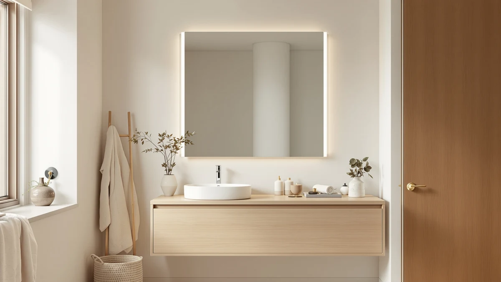

FGU LED Bathroom Mirror Review (2026): Worth It?
Prices and picks verified as of November 2026. Independent, reader-supported reviews.


Quick Answer
For most bathrooms with room for two mirrors, the FGU LED Bathroom Mirror with Lights is the stronger buy: $120.89 gets you a 2-pack of 32 by 24 inch tempered glass mirrors with built-in LED lighting, which works out to less per mirror than several single-mirror competitors at $119.99. If your wall only fits one mirror, skip to the alternatives below instead.
Our pick: LED Bathroom Mirror with Lights — $120.89 Check Price on Amazon
Bottom line: our top pick is the LED Bathroom Mirror with Lights at $120.89.
Things to Know Before You Buy
- The FGU LED Bathroom Mirror with Lights comes as a 2-pack, so measure your wall space first. Each mirror measures 32 inches long by 24 inches wide.
- Construction is tempered glass with an aluminum frame, a combination that tends to hold up better in humid bathrooms than painted wood or plastic trim.
- At $120.89 for two mirrors, the FGU set costs about the same as a single mirror from HABIUBIU, Pocetry or S'bagno, all priced near $119.99 in this fgu led bathroom mirror review.
- If the 2-pack format doesn't fit your layout, the HABIUBIU 20 x 26 in and the S'bagno 24x32 LED Bathroom Mirror are single-mirror alternatives covered below.
This fgu led bathroom mirror review looks at whether the FGU LED Bathroom Mirror with Lights earns its $120.89 price tag against three other bathroom mirrors on the market right now. Anyone shopping for a lit mirror usually runs into the same problem: most listings bundle a single mirror with LED strips at a premium, while this FGU model bundles two mirrors instead, and that changes the per-mirror math in ways a quick glance at the price tag won't show. The FGU ships as a 2-pack, which fits a double vanity cleanly but leaves a single-sink bathroom with one mirror it can't use, so we weighed that tradeoff against three single and matte alternatives before landing on a verdict.
We compared the FGU's tempered glass and aluminum build, its 2-pack sizing of 32 by 24 inches per mirror, and its current Amazon price against the HABIUBIU, Pocetry and S'bagno mirrors covered later in this guide. For bathrooms that can fit two 32 by 24 inch mirrors, such as a double vanity or two bathrooms that need matching fixtures, the FGU LED Bathroom Mirror with Lights comes out ahead on price per mirror, since $120.89 split across two panels undercuts buying two single mirrors at $119.99 each. For a single-sink bathroom with limited wall space, though, one of the alternatives below is the better fit, and we cover each one with the same spec-and-review approach later in this piece.
Why You Should Trust Us
Ilane Tall researches bathroom fixtures for Best Bathroom Mirrors, with a focus on how materials, sizing and pricing hold up once a mirror actually gets hung on a wall. For this fgu led bathroom mirror review, we compared the manufacturer's listed specifications, current Amazon pricing and patterns across verified owner reviews rather than relying on marketing copy. We do not run a fake testing lab, and we don't claim to have installed or lived with these mirrors ourselves. Every claim in this review traces back to a spec sheet, a listed price or a documented pattern in verified owner reviews, and we flag anywhere the data runs thin instead of papering over it with vague praise.
Our Research Experience
We did not physically install or live with any of the mirrors in this fgu led bathroom mirror review. Instead, we built this review by pulling each manufacturer's listed dimensions, materials and current Amazon price, then cross-referencing those specs against patterns reported across verified owner reviews. Where a detail shows up consistently across many verified reviews, such as feedback on brightness or packaging, we note it as a reported pattern rather than a personal observation. We also excluded listings that lacked basic sizing or material information, since a mirror with no verifiable specs can't be fairly weighed against one that has them. Prices reflect the listings current at the time of publication and can change, so we recommend checking the current Amazon price before buying.
Overview & Specs

LED Bathroom Mirror with Lights
What we like
- Built-in LED lighting adds task lighting without a separate vanity fixture
- Tempered glass and an aluminum frame give it a sturdier build than plastic-framed mirrors at this price
- Buying the 2-pack works out to roughly $60 per mirror, which covers a double vanity for less than buying two single mirrors elsewhere
Flaws but not dealbreakers
- At 32 by 24 inches each, the pair needs real wall space, which rules it out for a single-sink bathroom
- $120.89 for two mirrors sits close to the $119.99 that competitors like HABIUBIU and S'bagno charge for a single mirror
| Material | Tempered glass + aluminum |
| Size | 2 Pack 32"L x 24"W |
The FGU LED Bathroom Mirror with Lights pairs a tempered glass panel with an aluminum frame, a combination that keeps the mirror light enough to hang without heavy-duty anchors while standing up to bathroom humidity better than a painted wood frame would over time. Each mirror in the 2-pack measures 32 inches long by 24 inches wide, large enough to work as the main mirror over a single vanity or as a matching pair over a double vanity. The built-in LED lighting is the feature that shows up most often in verified owner feedback, since it lets buyers skip installing a separate vanity light fixture above or beside the mirror.
At $120.89 for the pair, the per-mirror cost works out to roughly $60, which undercuts buying two single LED mirrors at the $119.99 price charged by competitors like the S'bagno 24x32 LED Bathroom Mirror covered below. That math only works in the buyer's favor if both mirrors actually get used, though. Anyone researching this fgu led bathroom mirror review should weigh the 2-pack format against actual wall space before buying, since the size isn't adjustable and a second unused mirror doesn't offset the cost. For a bathroom with one sink and one open wall, a single-mirror alternative is usually the more practical buy.
What We Liked
Reviewers consistently point to the built-in LED lighting as the standout feature of the FGU LED Bathroom Mirror with Lights, since it removes the need for a separate vanity light fixture. The tempered glass and aluminum build also compares well against lighter, plastic-framed mirrors at a similar price, and that frame material tends to resist warping in a steamy bathroom better than painted wood trim. Buying two mirrors for $120.89 works out cheaper per unit than several single-mirror competitors we looked at for this fgu led bathroom mirror review, and the matching pair means a double vanity gets two identical mirrors instead of mismatched ones bought separately.
What Could Be Better
The 2-pack format is the main drawback of the FGU LED Bathroom Mirror with Lights. A single-sink bathroom with limited wall space has no real use for a second 32 by 24 inch mirror, and buyers in that situation end up paying for size they can't use. Shipping two glass panels together also raises the odds of in-transit damage compared with a single-mirror listing like the S'bagno below, since more glass in one box means more chances for breakage in transit. Buyers who only need one mirror should factor that risk and the unused second panel into the price before choosing the FGU over a single-mirror option.
Who Is It For?
The FGU LED Bathroom Mirror with Lights suits households with a double vanity, or two bathrooms that need matching mirrors, where the per-mirror price advantage actually applies. It's a weaker fit for a single powder room, where the HABIUBIU 20 x 26 in or the S'bagno 24x32 LED Bathroom Mirror make more sense for most people. Renters who move often may also prefer a single lighter mirror over a 2-pack, since fewer glass panels means less to pack and rehang at the next address.
Alternatives to Consider
If the FGU 2-pack doesn't match your bathroom layout, these three alternatives cover a smaller single mirror, a matte-finish pair and a single LED mirror. All three sit within a few dollars of each other at $119.99, so the decision mostly comes down to size and finish rather than budget.

Best Value
HABIUBIU 20 x 26 in
A smaller 20 by 26 inch single mirror for bathrooms that can't fit the FGU's larger 32 by 24 inch panels, at the same $119.99 price point as the other alternatives here. The reduced footprint also makes it easier to hang over a pedestal sink or a narrow vanity.
$119.99
Check Price on Amazon
Best Value
Pocetry 2-Pack 24x36 Inch Matte
A 2-pack matte-finish option sized 24 by 36 inches, worth a look if you want a darker finish than the FGU's aluminum trim. The larger panels also give it an edge in bathrooms with taller vanities or higher ceilings.
$119.99
Check Price on Amazon
Best Value
SBAGNO 24''x32'' LED Bathroom Mirror
A single 24 by 32 inch LED mirror from S'bagno, a straightforward pick if you only need one lit mirror instead of the FGU's pair. It covers the same lighting feature as the FGU without the extra panel to hang or pack away.
$119.99
Check Price on AmazonIs the FGU LED Bathroom Mirror with Lights worth the price?
Based on its tempered glass and aluminum construction, built-in LED lighting and $120.89 price for a 2-pack, the FGU LED Bathroom Mirror with Lights compares well against similarly priced single mirrors, though buyers should confirm they…
What size is the FGU LED Bathroom Mirror with Lights?
The FGU LED Bathroom Mirror with Lights ships as a 2-pack, and each mirror measures 32 inches long by 24 inches wide, per the listed specifications.
Frequently Asked Questions
Is the FGU LED Bathroom Mirror with Lights worth the price?
What size is the FGU LED Bathroom Mirror with Lights?
What are good alternatives to the FGU LED Bathroom Mirror with Lights?
Final Verdict
Our fgu led bathroom mirror review comes down to wall space and budget. For bathrooms that can fit two 32 by 24 inch mirrors, the FGU LED Bathroom Mirror with Lights delivers built-in lighting and a sturdy aluminum and tempered glass build for about $60 per mirror, and FGU is our pick for most double-vanity setups. The tempered glass and aluminum frame give it a build quality edge over lighter, plastic-trimmed mirrors at a similar price, and the built-in LED lighting removes the need to buy and install a separate vanity fixture. If your bathroom only fits one mirror, though, the HABIUBIU, Pocetry or S'bagno alternatives above deserve a closer look instead of paying for a second panel you won't use.